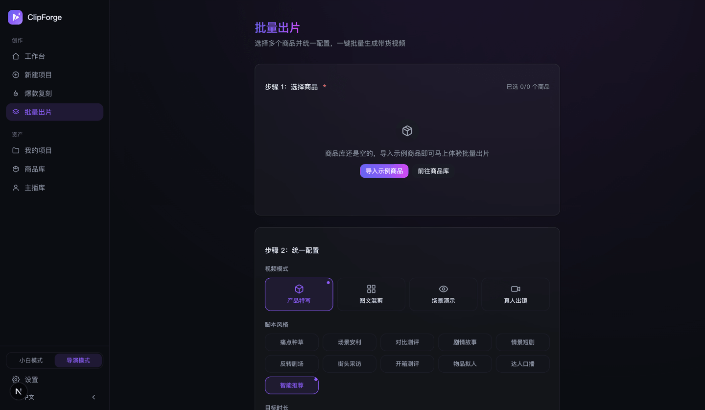

Tạo video bằng MCP: để Claude một câu ra video — ClipForge MCP Server + CLI + đăng hằng ngày theo lịch
Nói ngắn gọn: kết nối ClipForge MCP Server, bạn dán một link sản phẩm, nói một câu chủ đề trong AI agent như Claude / Cursor, vài chục giây sau là có video bán hàng dọc tải được. Tư liệu (Openverse / Wikimedia Commons) và lồng tiếng (Microsoft Edge TTS) hoàn toàn không cần Key, chỉ bước viết kịch bản cần một LLM Key tương thích OpenAI; kết hợp thêm dòng lệnh CLI + cron hẹn giờ + tự chọn chủ đề theo persona, là thành một cỗ máy đăng video ngắn hằng ngày hoàn toàn tự động không cần đụng giao diện. Mã nguồn mở AGPL-3.0, tự triển khai miễn phí. Muốn xem toàn cảnh sản phẩm trước? Xem Trang chủ và Hướng dẫn sử dụng.
1. ClipForge MCP là gì: biến dây chuyền ra video thành công cụ cho agent
ClipForge là công cụ video ngắn AI mã nguồn mở (chủ yếu cho bán hàng), đưa toàn bộ dây chuyền «một câu → kịch bản → ghép hình → lồng tiếng, phụ đề → dựng video dọc bằng FFmpeg» thông qua MCP(Model Context Protocol)Server thành công cụ chuẩn — bất kỳ MCP client nào (Claude Desktop, Claude Code, Cursor...) đăng ký xong, agent có thể gọi trực tiếp năng lực «tạo video», bạn không cần mở giao diện nào.
- Hình thức: trong repo có
mcp/clipforge-mcp.mjs, một MCP Server stdio, là lớp bọc mỏng quanh HTTP API của ClipForge — dùng lại toàn bộ điều phối trong instance (công cụ kịch bản / tư liệu miễn phí / Edge TTS miễn phí / dựng FFmpeg), trước khi chạy cần khởi động một instance ClipForge. Cũng có thể dùng gói cài MCP kèm theo Release, kết nối quanpx, không cần clone repo. - Chi phí: tư liệu và lồng tiếng không cần Key, ¥0; chỉ «tạo kịch bản» cần một LLM Key tương thích OpenAI (như DeepSeek, mỗi lần khoảng ¥0.001).
- Đầu ra: mp4 dọc 1080p (cũng có 16:9 / 1:1) không watermark, có sẵn phụ đề, có thể bật nhãn tuân thủ AIGC — đăng thế nào để không dính bóp tương tác, xem Hướng dẫn đăng video AI tuân thủ.
2. Ba bước kết nối: từ con số 0 đến agent một câu ra video
Bước 1: Khởi động một instance ClipForge
docker run -d -p 3000:3000 -v clipforge-data:/data ghcr.io/xixihhhh/clipforge
# hoặc mã nguồn: git clone https://github.com/xixihhhh/clipforge.git && cd clipforge && pnpm install && pnpm devMCP Server mặc định trỏ tới http://localhost:3000 (có thể đổi bằng CLIPFORGE_BASE_URL).
Bước 2: Đăng ký trong MCP client
Claude Desktop(claude_desktop_config.json) hoặc Cursor (~/.cursor/mcp.json) thêm vào:
{
"mcpServers": {
"clipforge": {
"command": "node",
"args": ["/duong-dan-tuyet-doi/clipforge/mcp/clipforge-mcp.mjs"],
"env": {
"CLIPFORGE_BASE_URL": "http://localhost:3000",
"CLIPFORGE_LLM_BASE_URL": "https://api.atlascloud.ai/v1",
"CLIPFORGE_LLM_API_KEY": "sk-...",
"CLIPFORGE_LLM_MODEL": "deepseek-ai/deepseek-v4-pro"
}
}
}
}Claude Code một lệnh:
claude mcp add clipforge -- node /duong-dan-tuyet-doi/clipforge/mcp/clipforge-mcp.mjsBước 3: Nói thẳng trong hội thoại
dùng clipforge làm một video ngắn dọc về «cách pha cà phê drip tại nhà»agent sẽ gọi clipforge_create_video, vài chục giây sau trả về địa chỉ mp4 tải được. Với bán hàng thì dán link sản phẩm trước — clipforge_ingest_product tự lấy tiêu đề / giá / ảnh chính và tạo sẵn dự án, tiếp đó ra kịch bản, ra video liền một mạch.
Muốn thử trực tiếp Server trên máy: ở thư mục gốc repo pnpm mcp (tương đương node mcp/clipforge-mcp.mjs, chế độ stdio).
3. Danh sách công cụ MCP: từ tạo dự án đến kiểm duyệt trước khi đăng
Tổng cộng 29 công cụ MCP bao quát toàn bộ quy trình ra video, cắt video gốc và giao bản chuyên nghiệp, vài công cụ cốt lõi:
| Công cụ | Làm gì | Cần LLM Key |
|---|---|---|
clipforge_create_video | Một câu → kịch bản → ghép hình miễn phí → lồng tiếng + phụ đề miễn phí → dựng video dọc, trả về địa chỉ mp4 tải được | ✅ |
clipforge_ingest_product | Dán link sản phẩm → lấy tiêu đề/giá/ảnh → một chạm tạo dự án bán hàng | — |
clipforge_generate_script | Chỉ tạo kịch bản lời dẫn và phân cảnh (kèm từ khóa tìm tư liệu tiếng Anh) | ✅ |
clipforge_search_stock | Tìm hình từ kho tư liệu miễn phí dùng thương mại được (không cần Key) | — |
clipforge_compose | Dựng video cho dự án đã có kịch bản + tư liệu, có thể bật phụ đề karaoke / thẻ sản phẩm / nhãn tuân thủ AI / CTA mua hàng / BGM và các tăng cường bán hàng khác | — |
clipforge_trends | Lấy chủ đề từ bảng xu hướng (bảng Trung Quốc / Google Trends), không biết làm gì thì hỏi nó trước | — |
clipforge_list_voices | Liệt kê giọng Edge TTS miễn phí đa ngôn ngữ (Trung/Anh/Nhật/Hàn/Tây Ban Nha) | — |
clipforge_get_video | Truy vấn kết quả dựng mới nhất của dự án (trạng thái/địa chỉ tải), thăm dò sản phẩm bất đồng bộ | — |
clipforge_master | Mặc định chỉ đọc, phân tích tính liên tục điểm cắt và độ lớn âm thanh; khi chủ động áp dụng sẽ lưu riêng bản master chuẩn hóa âm lượng hai lượt hoặc khử nhấp nháy | — |
clipforge_transcript_inspect | Đọc theo trang bản chép lời từng từ của video gốc, ID từ ổn định và phiên bản cắt hiện tại | — |
clipforge_transcript_edit | Chạy thử hoặc áp dụng kế hoạch cắt; mặc định chỉ trả về diff, xác nhận rõ ràng mới render phiên bản mới | — |
clipforge_timeline_export | Xuất timeline chuyên nghiệp OTIO / EDL / CSV; không ghi vào cơ sở dữ liệu, không chứa đường dẫn tuyệt đối trên máy | — |
Sau khi ra video còn có các công cụ kiểm duyệt bàn giao: tính liên tục và master clipforge_master (mặc định chỉ phân tích điểm cắt và âm lượng), cổng kiểm duyệt trước khi đăng clipforge_gate (một chạm khám kịch bản sẵn sàng + kiểm định + bản quyền tư liệu, fail thì đừng bàn giao), kiểm định video clipforge_qc (màn hình đen/im lặng/âm lượng), xem nhanh video clipforge_contact_sheet (agent xem ảnh tự kiểm), danh sách bản quyền tư liệu clipforge_credits, xuất theo nền tảng clipforge_export_platform... — agent không chỉ ra được video, mà còn tự kiểm tra xong mới giao cho bạn. Danh sách đầy đủ xem mcp/README.
4. CLI ra video bằng script: một dòng lệnh một video
Không qua agent cũng được, dùng thuần dòng lệnh (khởi động instance trước, đặt biến môi trường CLIPFORGE_LLM_*):
npm run cli -- trends # Không biết làm gì? Lấy chủ đề tìm kiếm hot trước
npm run cli -- create --topic "pha cà phê drip tại nhà" --quality hd --bgm # Một câu ra video, trả về videoUrl
npm run cli -- qc --project <id> # Kiểm định video (màn hình đen/im lặng/âm lượng)
npm run cli -- master --project <id> # Mặc định chỉ đọc: phân tích liên tục điểm cắt + âm lượng
npm run cli -- master --project <id> --apply --normalize-audio # Tạo master âm lượng hai lượt, không ghi đè video gốc
npm run cli -- gate --project <id> --strict # Cổng kiểm duyệt, khi chặn trả mã thoát 2 (nối được vào CI)
npm run cli -- transcript --project <id> --media <mediaId> # Kiểm tra bản chép lời từng từ và phiên bản
npm run cli -- transcript-edit --project <id> --media <mediaId> --plan edit.json --revision 0 --operation edit-001 # Mặc định chạy thử; --apply mới thực thi
npm run cli -- timeline --project <id> --media <mediaId> --plan edit.json --format otio --out edit.otio # Xuất timeline chỉnh sửa được
npm run cli -- --help # Toàn bộ lệnh và tham sốCách viết tương đương node bin/clipforge.mjs create --topic "...". Còn có import (ra video từ bản thảo có sẵn), dub (đổi ngôn ngữ, lồng tiếng cho thị trường nước ngoài), cover (ảnh bìa), carousel (thẻ ảnh chữ Xiaohongshu) và các lệnh con khác, tất cả đều đưa vào script được.
5. cron hẹn giờ + chọn chủ đề theo persona = cỗ máy đăng hằng ngày tự động
Hình thức đỡ tốn công nhất của «AI agent đăng video ngắn hằng ngày» thực ra chỉ là một dòng crontab: trends lấy bảng xu hướng, create ra video, nối với cron là mỗi ngày đúng giờ có một video chờ đăng:
crontab -e # Thêm dòng dưới đây (đổi đường dẫn và biến môi trường cho phù hợp): mỗi ngày 9 giờ lấy chủ đề top 1 bảng xu hướng Trung Quốc ra một video
0 9 * * * cd /path/to/clipforge && TOPIC=$(node bin/clipforge.mjs trends --json | python3 -c "import json,sys;print(json.load(sys.stdin)['topics'][0]['title'])") && node bin/clipforge.mjs create --topic "$TOPIC" --bgm >> daily.log 2>&1Không muốn đụng terminal? Bản web cùng logic: ở bàn làm việc, mục «Đăng hằng ngày · chọn chủ đề theo persona» điền vài từ khóa persona, tự chọn chủ đề theo persona, điền sẵn «Một câu ra video» — cron lo đúng giờ, persona lo chủ đề, bạn chỉ lo bấm đăng cuối cùng.
6. Làm hàng loạt: 10 sản phẩm xếp hàng cho sale lớn
Chuẩn bị hàng cho sale lớn không cần làm từng video: trang làm video hàng loạt ở chế độ đạo diễn một chạm xếp hàng nhiều sản phẩm (ví dụ 10), tự chạy lần lượt «kịch bản → hình → lồng tiếng → dựng», xong thì nhận chung — nút thắt năng suất của video bán hàng tự động chuyển từ «người dựng nhanh cỡ nào» thành «máy xếp hàng dài cỡ nào».

7. Agent Skill: dạy agent «khi nào dùng công cụ nào»
MCP cho agent công cụ để gọi, Skill thì dạy nó khi nào và kết hợp thế nào (quy ước SKILL.md dùng chung cho Claude Code / Cursor / Copilot / Windsurf):
- clipforge-video skill: dạy trợ lý lập trình toàn bộ dây chuyền ra video (kịch bản → tư liệu → lồng tiếng → phụ đề → dựng → cổng kiểm định), điều khiển toàn trình bằng ngôn ngữ tự nhiên;
- skill hội đồng giám khảo script-judges: bốn giám khảo dùng độc lập được (nhịp / văn nói / độ mới / cấu trúc) trước khi tốn phí tạo mổ xẻ từng câu lời thoại và viết lại giữ nguyên độ dài — kiểu giọng quảng cáo «Xin chào mọi người, hôm nay mình giới thiệu cho mọi người» không qua nổi vòng đầu;
- Chọn cách cài:
npx skills add xixihhhh/clipforgemột lệnh; trong Claude Code/plugin marketplace add xixihhhh/clipforgecài skill + MCP hai trong một.
8. Ba tình huống điển hình
Tình huống 1: chuỗi cửa hàng đăng hằng ngày
Nhiều cửa hàng nhiều tài khoản, mỗi ngày mỗi tài khoản một video. cron hẹn giờ + chọn chủ đề theo persona mỗi bên lo một việc, luồng dựng nhanh miễn phí ¥0 chạy số lượng, agent chỉ cần bạn xác nhận ở hai điểm: chọn chủ đề và đăng cuối cùng.
Tình huống 2: chuẩn bị hàng cho sale lớn
Một tuần trước đợt sale lớn, đưa hết link sản phẩm chủ lực cho agent: clipforge_ingest_product tạo dự án hàng loạt, trang làm hàng loạt xếp hàng ra video, rồi dùng clipforge_gate cho từng video qua cổng kiểm duyệt, video không đạt không xuất kho.
Tình huống 3: ma trận nội dung
Cùng một nội dung phân phối đa ngôn ngữ đa nền tảng: dub đổi ngôn ngữ lồng tiếng (bản tiếng Trung đăng Douyin, bản tiếng Anh đăng TikTok, cùng nguồn cùng hình), clipforge_export_platform xuất quy cách từng nền tảng, kết hợp carousel thẻ ảnh chữ Xiaohongshu để phủ kín ma trận.
Lưu ý: nội dung do AI tạo đăng lên nền tảng Trung Quốc phải gắn nhãn theo quy định, ClipForge đã đặt nhãn AIGC thành mặc định bật — chi tiết xem Đăng video AI tuân thủ; lộ trình làm quen đầy đủ về công cụ và chi phí xem Hướng dẫn sử dụng.
Để agent của bạn ra video đầu tiên ngay hôm nay
Mã nguồn mở AGPL-3.0 · tư liệu và lồng tiếng không cần Key · MCP + CLI + Skill đều có trong repo.